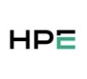

Hey, I'm
Aryaman Kumar
Innovating at the intersection of Computer Science, Mathematics, and Quantitative Economics.
Currently pursuing a Bachelor of Science in Computer Science, Mathematics, and Quantitative Economics, I am dedicated to merging academic knowledge with industry skills to drive innovation and transformative solutions in AI. As an AI Intern at Zensar Technologies, I work at the forefront of technology, specializing in synthetic data generation and large language models. My experience as a Peer Tutor for Computer Science, Mathematics, and Quantitative Economics at Rutgers University complements my practical expertise, providing a deep understanding of core computer science principles. I am also passionate about pursuing roles as a Quantitative Analyst and Software Engineer to further expand my impact in the tech industry.
“Blending curiosity, creativity, and code to shape the future of technology.”
“Blending curiosity, creativity, and code to shape the future of technology.”
 View Resume
View Resume
Past Experience

HP Tech Ventures
Aug 2024 - Oct 2024
- Corporate VC & Analytics
- Researched startups, analyzed markets, and supported investment strategy with data-driven recommendations.
- Worked with cross-functional teams to improve investment frameworks and contributed to thought leadership on startup ecosystems and innovation trends.
Tech Mahindra Inc
June 2024 - August 2024
- AI/ML Intern
- Developed and fine-tuned LLMs for sentiment analysis, model quantization, and validation with real-world data.
- Collaborated with senior engineers to optimize model performance and presented findings to leadership.

Fidelis Animal Health
Jan 2024 - Apr 2024
- Extern, Data Analytics
- Analyzed CRM data, segmented contacts, and presented actionable insights to drive engagement and growth.
- Led a team project to automate data grouping and improve reporting efficiency for business stakeholders.
Rutgers University
2022 - Present
- Peer Tutor, IT Consultant
- Supported students, improved university web systems, and resolved technical issues for campus users.
- Developed new features for the Rutgers web portal and provided one-on-one tutoring in Quantitative Economics and Computer Science.
Firstsource Solutions
Jun 2023 - Aug 2023
- Data Analyst Intern
- Automated research and restructured data using NLP and Python, boosting output and efficiency.
- Improved sales and contact efficiency by 15% through data-driven insights and custom analytics. Presented results to management and implemented new reporting dashboards.
Skills
Python
Java
C
SQL
TensorFlow
Pandas
NumPy
Data Visualization
React.js
HTML/CSS
Streamlit
Backend Development
Machine Learning
Deep Learning
NLP
Computer Vision
Generative AI
Let's Connect
I'm always open to discussing new projects, creative ideas, or opportunities to be part of your visions.